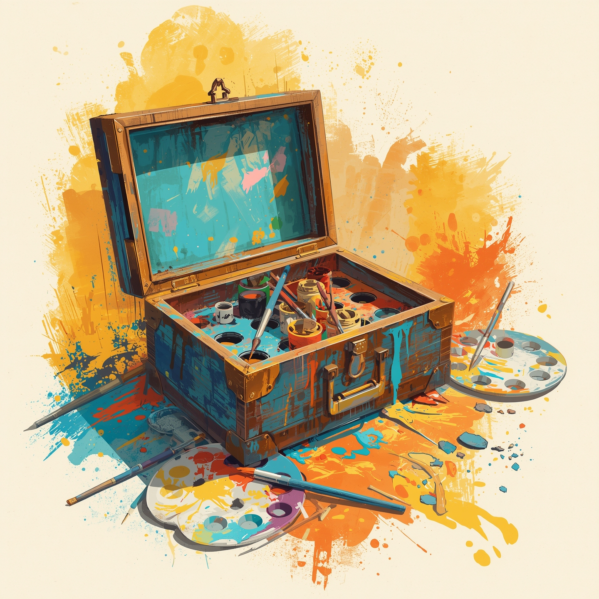
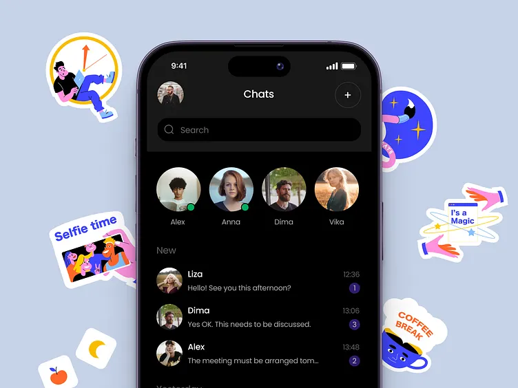

Pac-Man Game
A classic Pac-Man game recreated in Scratch, featuring smooth character controls, ghost movement logic, point collection, and clear win/lose conditions. The maze, sound effects, and interactive elements were all custom-designed to provide a fun and functional gameplay experience.
View Project

Paint Box
A simple drawing application made in Scratch, allowing users to draw freely using the mouse. Includes features like color selection, pen size adjustment, and a clear screen button for easy sketching.
View Project

Messenger App
A chat application built in Thunkable where users can enter a shared key to join a common chat room. Enables real-time messaging between users in the same room with a simple and user-friendly interface.
View Project